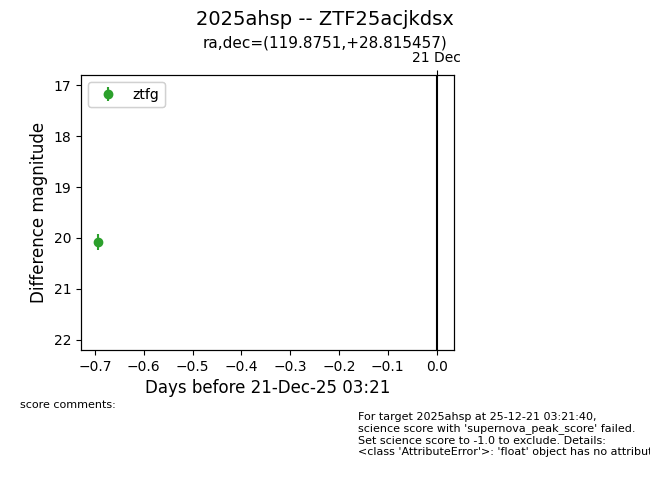
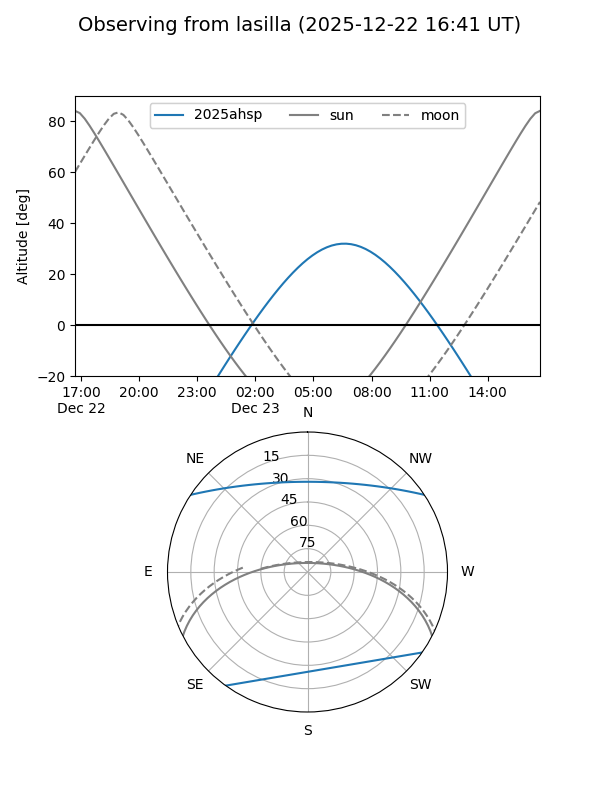
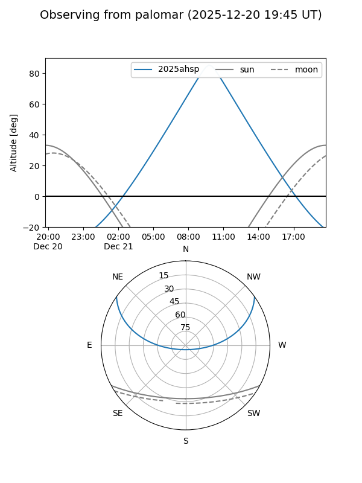
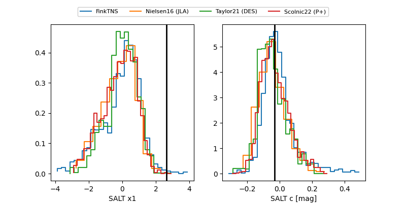

2025ahsp
Target 2025ahsp at 2025-12-21 07:08
Aliases and brokers:
FINK: fink-portal.org/ZTF25acjkdsx
Lasair: lasair-ztf.lsst.ac.uk/objects/ZTF25acjkdsx
ALeRCE: alerce.online/object/ZTF25acjkdsx
TNS: wis-tns.org/object/2025ahsp
YSE: ziggy.ucolick.org/yse/transient_detail/2025ahsp
alt names
ZTF25acjkdsx (ztf,fink_ztf)
2025ahsp (tns,yse)
Coordinates:
equatorial (ra, dec) = 119.8751,+28.81546
equatorial (HMS+DMS) = 07:59:30.01,+28:48:55.64
galactic (l, b) = (192.5037,+26.61352)
Flags:
Photometry:
last ztfg=20.08
1 ztfg detections
Lightcurve

Visibility


Additional plots
